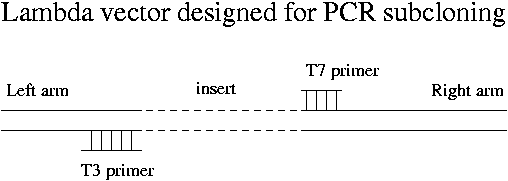
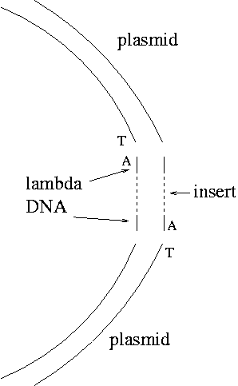
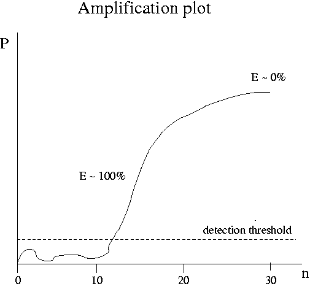
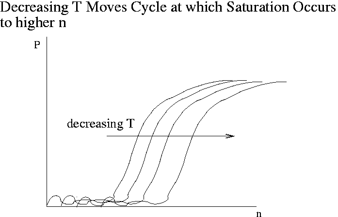

Day 6 Morning Lecture Notes
Steve Williams, Smith College
June 11, 2004
Why transfer a foreign gene from lambda vector to a plasmid?
Note that steps 2 through 7 are necessary due to the low yield of phage from step 1.
There's an optional purification process between the first and second steps but only for sequencing, not for subcloning.
Vectors that are specially designed for convenient PCR subcloning are available. They produce a PCR product that has about 100 bp of lambda DNA at either end of the insert.

For some reason the products of Taq polymerase are always terminated with a single A at the 3' end. These PCR products can be terminated with vectors that have a single T overhang. EcoR1 overhangs will ligate only to other EcoR1 overhangs, while blunt ends are not at all specific. Single-A overhangs turn out to be fairly specific because naturally occurring single-T overhangs are unknown.
How to prepare single-T overhangs on plasmid DNA? Use a blunt-cutter enzyme on the plasmid and then employ DNA polymerase to add a T at each 3' end. A specially modified T NTP allows addition of only one base pair. After heat-killing the DNA polymerase, unblock the single T. In actual fact you can purchase a cut plasmid already terminated with the single T. The insertion into the plasmid is chose to occur at a place that doesn't interfere with an E. coli gene.

Note that the A overhangs don't ligate with each other. The only product should be the desired one except that not all the plasmid blunt ends will acquire T's, so there may be some plasmid without inserts as a background.
Quantitative Reverse-Transcription PCR
Lori Saunders, Gwathmey, Inc.
Formation of loops and unintended products like primer-dimers lowers the efficiency of PCR and causes problems. If the efficiency is 100%, the amount of product P = T*2n where T is the amount of starting RNA template and n is the number of cycles. More realistically P = T*(1 + E)n. Even so the efficiency will vary from cycle to cycle.
The goal of quantitative PCR is to back out the amount of template T (that is, the amount of gene expression) from P(n) data. Real-time or kinetic PCR is a technique that has been developed in the last 10 years to address this goal. The leading instruments are the TaqMan 7700 and 7000 developed by Applied Biosystems ($30-40K). In TaqMan the amount of product is detected very 7 seconds via fluorescence. The plot below shows the kind of raw data produced by real-time PCR. The product P is measured in fluorescence units. The complete real-time PCR experiment typically takes about 2 hours. The vendors who make PCR primers also sell fluorescent probes for real-time PCR.

As the initial amount of template T decreases, the cycle at which saturation occurs moves out to higher n. Due to noise, data at low n are unreliable. At high n all the curves for various values of T are the same. The steepest part of the curve is the best place to determine kinetic coefficients. Customarily one plots the amount of product at a given cycle versus T or the cycle at which P reaches a given value versus T (a "fixed fluorescence plot"). These plots can incorporate data for T values so low that saturation is never reached.

Up Previous Next